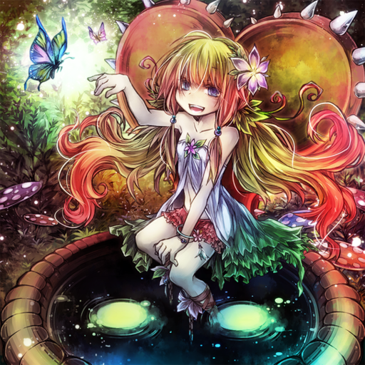

The mysterious lifeforms known as the "Traptrix" dwell deep within the forests of the south, consuming any creature that loses its way through the forest. As soon as their existence became public knowledge, countless researchers, fascinated by their unique form of predation, began to pop up, resulting in rapid progress concerning research into these creatures. And in recent years, many new species have been discovered. In honor of those who came before, dedicated their bodies and souls to the "Traptrix", and advanced research on them at great cost, we present the results of their work in this paper.
"Traptrix Pinguicula" It captures prey attracted by its pretty figure, using its sticky leaves to seal their ability to move, and turns them into nourishment.
"Traptrix Atypus" Its threads entangle and capture its prey, this creature tricks them with a figure that resembles that of a helpless girl, ultimately capturing the hapless helper with its razor-sharp claws.
"Traptrix Holeutea" An unusual "Traptrix" with demon-like claws and horns. It lurks underneath leaves, lying in wait for prey to capture.
While overall the "Traptrix" make the vast forests in the south their home, each species seems to have its own specific territory.
"Arachnocampa" shares a habitat with "Rafflesia". They calm the minds of their prey by creating two different calming atmospheres.
"Sera" standing in a meadow. The landscape itself seems quite peaceful, but the entire area is filled with sticky hairs released by "Sera".
here are various species of "Traptrix", but there's been no territorial disputes or other sorts of hostilities between them observed so far. Some "Traptrix" have been observed to be especially 'friendly' with one another.
"Pudica" and "Nepenthes" have similar means of hunting, and similar appearances, looking effectively like sisters.
It's been observed that this pair of "Pudica" and "Mantis" cooperate, despite being different species, to capture prey and share nutrients, practically acting as if they were friends.
There exists a forest that, at first glance, seems perfectly normal – but if you look into the data, you'll find a surprising number of missing persons cases that seem to be related to it. As a biologist, I decided to study this forest, and I will record here what I discovered: a group of organisms thought to be the cause for the many disappearances.
For several days, I walked, unable to find anything to do with the disappearances' cause, until one day when I caught a glimpse of a strange scene deep in the forest. Somehow, a group of very young girls had made their way into the middle of these woods, and they were beckoning me to come closer. Was this some sort of indigenous tribe? I decided to draw nearer with the hope of speaking with them, but...
"Traptrix Atrax" A spider-like creature, who appears to act as leader of the group of monsters I would later call "Traptrix". If you come near her, she will bind you up with thread and prevent you from moving.
"Traptrix Myrmeleo" A "Traptrix" that seems to have evolved into an antlion-like form. She goes around the forest, digging "Trap Holes", and then lies in wait for prey to fall in.
"Traptrix Nepenthes" A "Traptrix" that seems to have evolved into a pitcher-plant-like form. She lures in prey with a sweet scent. If you carelessly draw close, you'll fall into her digestive juices.

"Traptrix Dionaea" A new variety of "Traptrix" that appeared later on. It is wise to be careful when one is nearby, as many other "Traptrix" commonly live close to it.
I heard a voice coming from a thicket close by, and went to see if I could get a glimpse of any of the forest's other residents... and what I saw spread out before me was truly repulsive. It was the very girls(?) I had seen earlier – they were the ones responsible for the disappearances of so many people in this forest!!
Here, the carnivorous banquet begins. These are giant, carnivorous organisms who use their innocent looks to trick men who wander into the forest, and then reveal their true motive: to trap and devour their prey. Therefore, I have decided to name these organisms, "Traptrix".
If you happen to catch sight of one of these creatures, leave the area without getting close to it. If you do end up getting close, however, it's no exaggeration to say you won't get a chance to escape.
As I attempted to flee, I was chased by the spider-type "Traptrix", but because I had this powerful bug spray, I was able to escape without a problem.